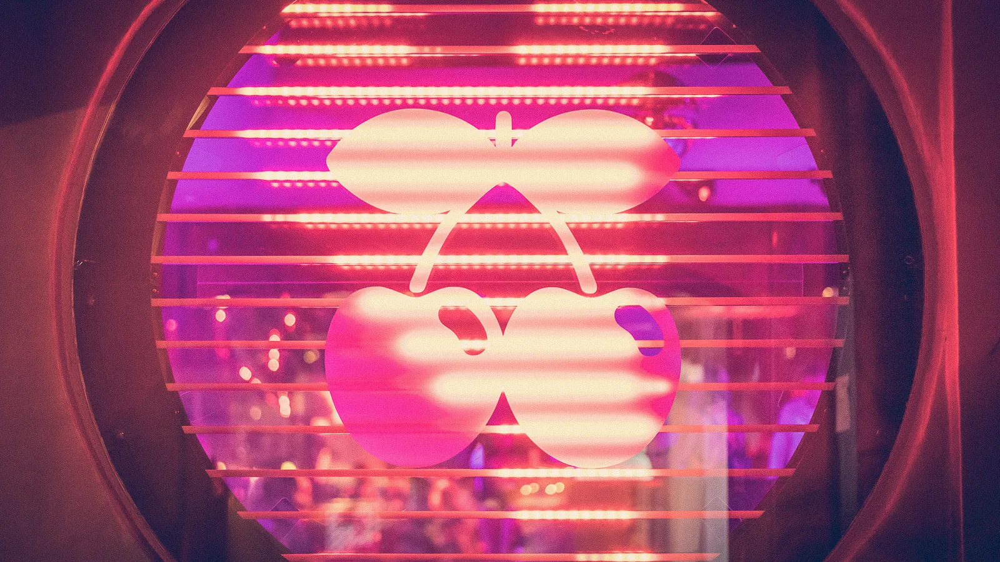

IBIZAOct 11, 2026
All Night, One Name
Closing week ran from Tuesday 6 October to Sunday the 11th. Manda Moor, Mau P and Sirus Hood each got a room until morning. On Friday, Hï gave the Club Room to Skepta’s Más Tiempo. On Saturday, Ushuaïa built eleven hours out of seven back-to-backs, and Amnesia ran its 50th year from the afternoon into the next day.
The bills for Ibiza’s last week were public in August. Hï and Ushuaïa posted their closing lineups then. What the week of 6 to 11 October actually put on the doors was two kinds of night, running at the same time. Three people were handed a room and told to stay in it. Everywhere else, the poster multiplied.
Tuesday, Wednesday, Thursday
Tuesday was Hï. East End Dubs closed the first season of Eastenderz. In the Theatre he played back to back with Ewan McVicar, and Traumer played back to back with Priku. Paco Osuna closed NOW HERE in the Club Room with Andre Butano. In the Wild Corner, Manda Moor played all night. One name, open to close, in the smallest of the three rooms.
Wednesday, Mau P closed Baddest Behaviour at Pacha the same way. All night, no second headliner, under the cherries. The same night, Jamie Jones closed Paradise after a second season at [UNVRS]: Jones, Adam Ten, Mason Maynard, SOSA, and Manda Moor, a night after she had already played a room until morning. Downstairs at Paradise the Bunker went to Hot Creations, with Grace Arribas, Luca 606, Kate Simko and Vanee. Two closings, one island, and only one of them was a single person given the clock.
Thursday is the contrast inside one building. Upstairs at [UNVRS], Indira Paganotto presented ARTCORE with I Hate Models, Kobosil, AZYR and Anna Unusyan. Two nights earlier the DJ Mag poll had put her at 26 and handed her its first psy prize. I Hate Models, on that same poll, had just fallen out of the hundred. Downstairs, Beatport Live gave the Bunker to Sirus Hood from open to close. That is the third all-nighter in three nights. Moor on Tuesday, Mau P on Wednesday, Hood on Thursday. The main room upstairs was a five-name bill. The room under it was one.
Friday, the rooms change hands
Friday is when the residencies turn into venue closings. Hï’s closing party put Black Coffee, the Martinez Brothers, Paco Osuna and Delilah in the Theatre, with Adam Ten and Mita Gami back to back, and Maz with Antdot. The Club Room went to Skepta’s Más Tiempo: Skepta, Gaskin, Laidlaw, Djammin, Ossie, Meeshy and the Menendez Brothers. LF System, Edd, Minna, Candidate, Saigon and Melon Bomb took the Wild Corner, the room Moor had held alone three nights before.
The same Friday, in the room that had crowned him on Tuesday, Guetta closed Galactic Circus. Meduza played back to back with Kevin de Vries. Korolova, Volkoder and Jast were on the bill with him. Korolova had been on Tuesday’s countdown stage, and on the list she had climbed 14 places. Across the island, Glitterbox closed at Amnesia with Masters at Work, Dimitri from Paris, HoneyLuv, and Jorja Smith live. Music On’s second night at Pacha kept Marco Carola’s week going, with Franky Rizardo, East End Dubs, Ilario Alicante and Ale De Tuglie. Follow one DJ and the island starts to look like a bus route. Follow the rooms and Friday is the night the single name disappears.
Saturday into Sunday
Ushuaïa gave its last party to ANTS and built an eleven-hour Saturday out of seven back-to-backs. Vintage Culture with Loco Dice. East End Dubs with Hot Since 82. Andrea Oliva with Patrick Topping. Nic Fanciulli with Butch. Prunk with Fleur Shore. M-HIGH with Marlie. Eliza Rose with Olive F. DJ Mag had published that shape of the day in August. By Saturday it was the day itself: a marathon whose unit is a pair.
East End Dubs’s week, if you keep the name in your head, runs Tuesday at his own Hï close, Friday on Music On at Pacha, Saturday afternoon at Ushuaïa, and Saturday night at [UNVRS], where the second season closed with Adriatique, Mochakk, the Martinez Brothers, WhoMadeWho, Dennis Cruz, Rafael, and him. The Martinez Brothers had been in Hï’s Theatre the night before, and on the poll they had just climbed 15 places to 28. Mochakk had climbed 10, to 46. The closing bills and the ballot were counting overlapping summers.
Amnesia billed Saturday as a 50th year and ran it from the afternoon into Sunday. The club opened in 1976. Daytime had Groove Armada with Max Dean, Kolter with Traumer, and Joseph Capriati at sunset. At night the Terrace put Capriati back to back with Josh Baker, the poll’s highest new entry five days earlier, in at 40. The main room went harder: Klangkuenstler, Nina Kraviz, Deborah De Luca, Future666. De Luca had dropped 21 places on the same poll, from 60 to 81, and still had the big room on the biggest Saturday.
Sunday still had a dancefloor. Destino Five closed Music On in the open air with Marco Carola, Luciano, Rossi. and Davide Squillace. Luciano had taken DJ Mag’s outstanding-contribution prize on Tuesday, in the other big room. Pacha finished its weekend with PAWSA and Miguelle & Tons. Claptone closed The Masquerade at Chinois. O Beach shut its season. Anybody still out had been through a timetable.
Three boxes on that timetable contain one name and the words all night. Moor had the Wild Corner on Tuesday and a featured slot on Wednesday, which is what an all-nighter buys you the next day: you are already warm, and you are no longer alone in the room. Hood had the Bunker while five names played techno above him. Mau P had Pacha to himself on the Wednesday, and in the poll read out the same week had climbed 22 places to 55, level with John Summit and Chris Stassy for the medal. The island spent the last days of the season running the long set and the stacked poster in neighbouring rooms. The posters had promised the scale since August. The all-night rooms were the part that still had to be played in one sitting.
Sources
- DJ Mag, “Hï and Ushuaïa Ibiza 2026 closing party line-ups announced” (Martin Guttridge-Hewitt, 13 August 2026): https://djmag.com/news/hi-and-ushuaia-ibiza-2026-closing-party-line-ups-announced
- Hï Ibiza, what’s on, 5–11 October 2026: https://www.hiibiza.com/news/what-s-on-this-week-in-ibiza
- Time To House, “Ibiza Closing Week 2026: Full Lineups” (Josh D., 6 October 2026): https://timetohouse.com/en/articles/ibiza-closing-week-2026-carteles
- The Ibiza Magazine, “[UNVRS] season closing, 10 October”: https://theibizamagazine.com/unvrs-ibiza-october-2026-dj-mag-awards-closing-party/
- Night Shift, “Six Times” (8 October 2026): /news/six-times